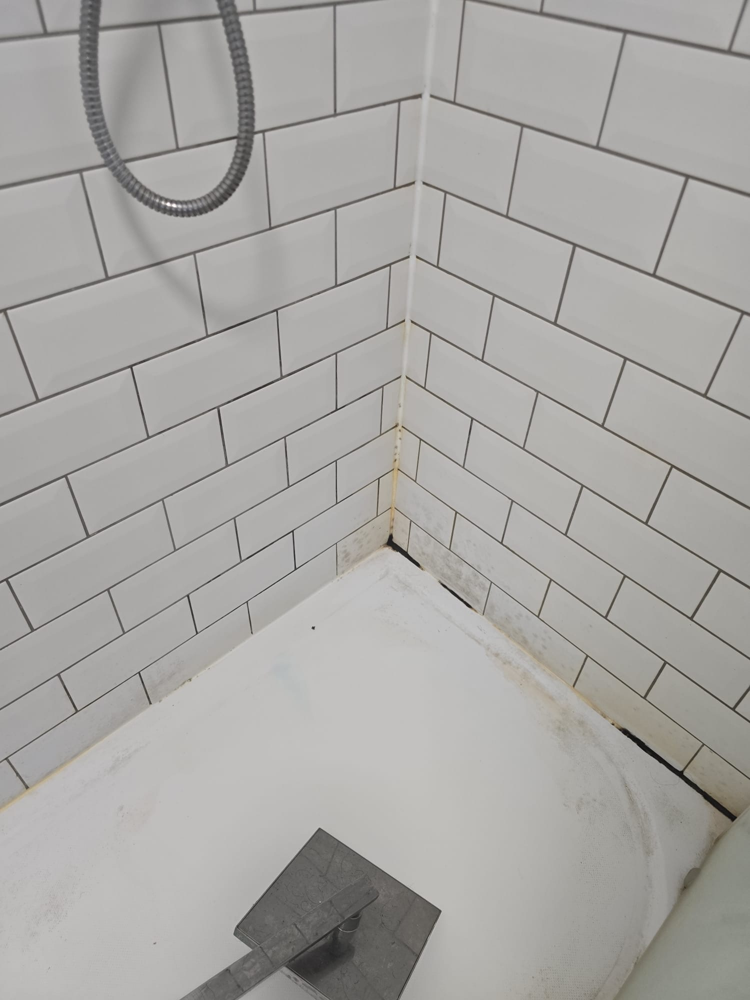
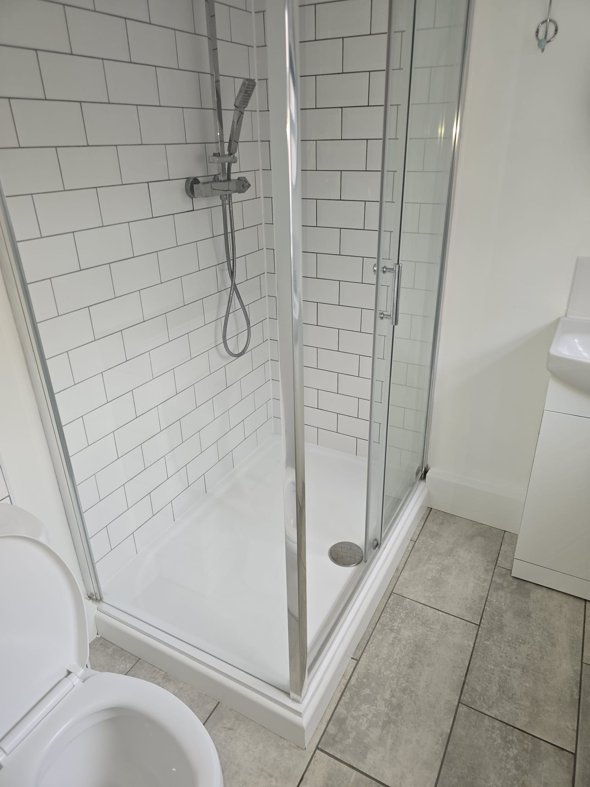
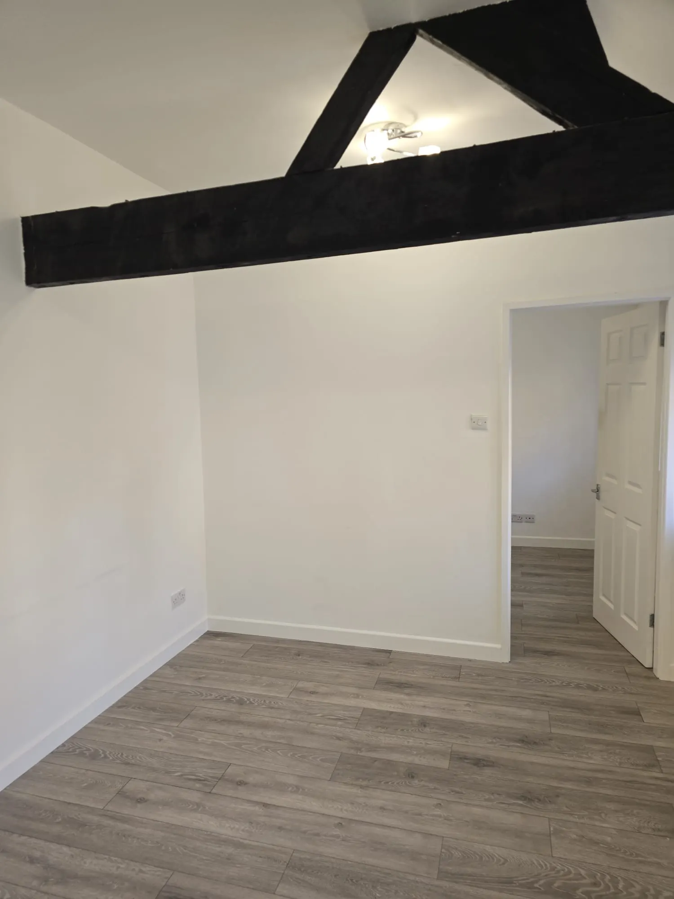

Condition and priorities
Record each room, note damaged or missing items, and separate urgent concerns from presentation work.
Between tenancies
Re-Let coordinates void property turnaround work for Nottingham landlords and letting agents, bringing repairs, clearance, cleaning and presentation priorities into one practical plan.


A void period is easier to manage when the scope is captured early. We help turn inspection notes and photos into a practical sequence of work.
Separate essentials, presentation improvements and optional upgrades.
Agree access, decisions and the communication contact before work starts.
Work towards a clean handover point for marketing, checks or move-in preparation.
Send the checkout report, photos and target date so we can understand the job.

Void case study
The Main Street case study records the post-tenancy condition, clearance and detailed clean before the next repair and presentation decisions.
View before and afterTurnaround scope
A void period is easier to manage when condition, essential work, cleaning and optional improvements are recorded separately.
Record each room, note damaged or missing items, and separate urgent concerns from presentation work.
Plan removal, repair, making good and cleaning in an order that avoids repeating work.
Keep final photographs and a note of completed, deferred or separately referred items with the property record.
Questions
Clear starting points for scoping this service.
Include checkout or condition photographs, the target use of the property, known repair items, access details and any dates already fixed for inspections, cleaning or marketing.
They can be planned as connected stages when the scope is clear. Repair, drying or removal work may need to happen before the final clean, so sequencing matters.
No. The useful scope may be a focused repair list, clearance and deep clean, or selected room improvements. The starting condition and intended outcome should guide the plan.
Share the postcode, photographs, occupancy and priorities to start a practical conversation.